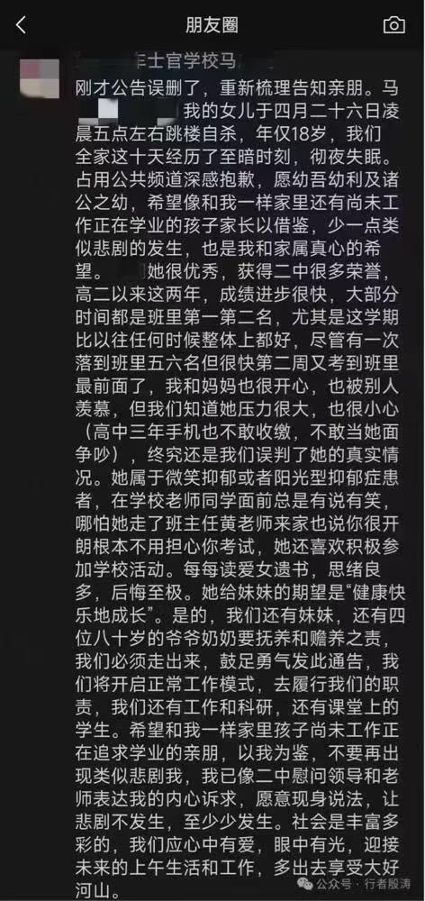
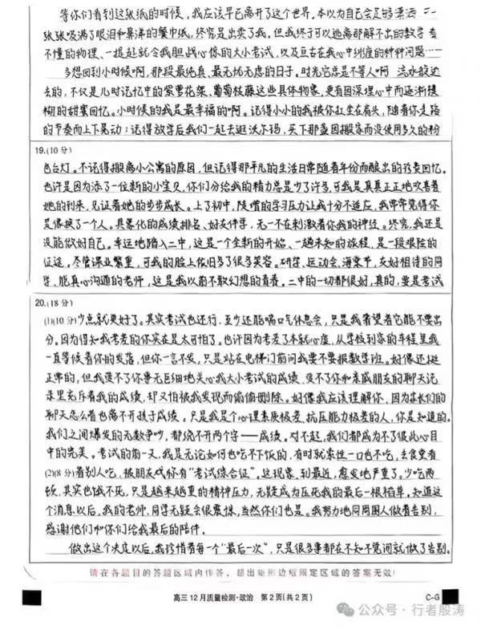
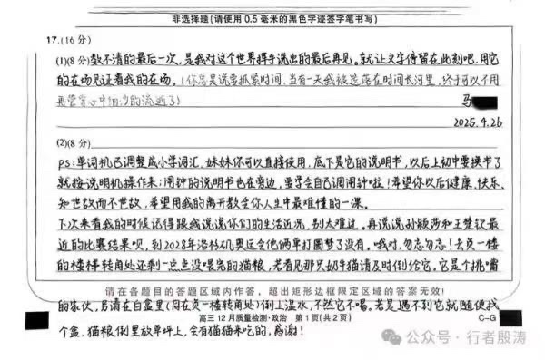
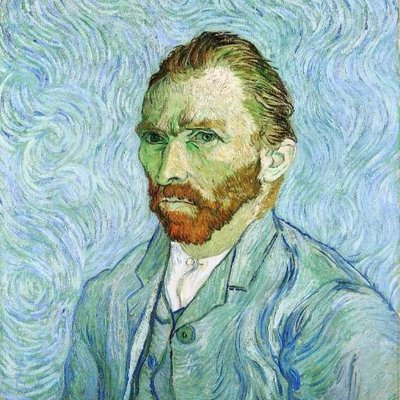

拱北靠北
@psyofsouthwest
@howie_serious 教师家庭心理问题最高发




howie.serious
@howie_serious
那些道貌岸然的畜生家长，绝非儿童抑郁症的受害者，而是 100% 的施害者，是杀人凶手。
这三张图是朋友发给我的。我仔细读了，结论就一个：这两家长是畜生。
孩子遗书里写的清清楚楚，是父母逼死了她，是因为考试。
父母却傻逼嘻嘻，用“阳光型/微笑型抑郁症”（不存在这种东西，就是父母不 https://t.co/dZsXKRtUIJ